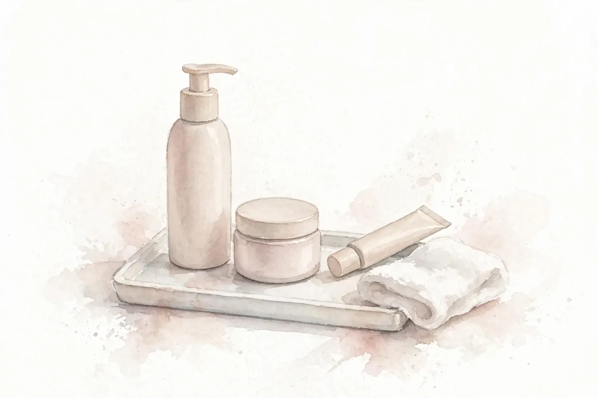
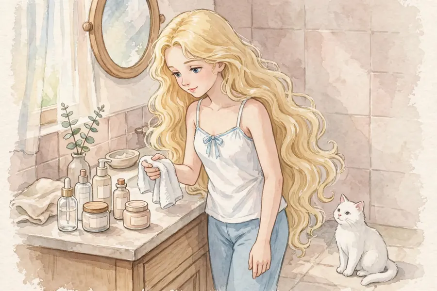

トップ ＞ スキンケア ＞ クレンジング料のタイプ別表示：オイル・バーム・ジェル・ミルクの読み方
クレンジング料のタイプ別表示：オイル・バーム・ジェル・ミルクの読み方

施術の仕事をしていると、お客様から「クレンジングって、オイルとバームとジェルとミルク、どれを選べばいいんですか」と聞かれることがあります。店頭に並ぶクレンジング料には、タイプの名前が大きく書かれていますが、その違いは「剤形」、つまり中身の形の違いです。この記事では、特定の商品の話ではなく、タイプ別の表示の読み方を整理します。私自身、新しいクレンジング料を手に取るときは、まずこの表示を確認するようにしています。
5つのタイプ、違いは「なじませ方と落とし方」
オイルタイプは、とろりとした液体で、メイクとなじませてから水で乳化させて流す使い方が一般的です。バームタイプは、固形に近いものが手のひらの温度でとろけてオイル状になるもので、すくって使う分量を自分で決めやすい形です。ジェルタイプは、みずみずしい感触で、のばしやすさを重視したものです。ミルクタイプは、乳液のように軽い感触で、なじませるときの摩擦を感じにくいと感じる人もいます。クリームタイプは、こっくりとした感触で、乾燥を感じやすい季節に選ばれることもあります。
どのタイプも、パッケージの「使用方法」の欄に、使う量となじませ方、流し方の手順が書かれています。タイプの名前だけでは、手順までは分かりません。買う前に、この欄を読んで「自分が続けられそうな手順か」を確かめるのが、私のやり方です。たとえば「乳化させる」という手順が書かれているものは、流す前に水を少し加えて白くするひと手間があります。こうした手順は、タイプごとに違います。
表示で確認したい3つの欄
ひとつ目は、使用量の目安です。「500円玉大」「さくらんぼ大」「2〜3プッシュ」のように、大きさや回数で書かれていることがあります。量が少ないと、なじませるときに指の滑りが悪くなり、肌をこする感じが出やすくなります。表示の量を、まずはそのまま使ってみるのが基本です。
ふたつ目は、使える状態の案内です。「濡れた手でも使える」「乾いた手で使う」といった書き方があり、入浴中に使うかどうかで選び方が変わります。みっつ目は、洗い流しの案内です。「W洗顔不要」と書かれているものもあれば、「洗顔料での洗顔をすすめる」と書かれているものもあります。この3つの欄を読むと、その商品の使い方がだいたい見えてきます。
選ぶときは「落とすもの」から考える
その日のメイクの濃さによって、落としたいものの量は変わります。しっかりしたメイクの日と、軽い日差し対策だけの日では、求める落とし方が違います。私は「今日はどれくらい落としたいか」を出発点にして、タイプを選ぶようにしています。肌の調子がゆらぎやすい時期は、なじませるときの感触が軽いタイプを選ぶ人もいます。
もうひとつ、クレンジング料の表示で目にするのが、「ダブル洗顔」に関する案内です。「ダブル洗顔不要」と書かれているものは、クレンジングだけで洗顔まで済ませる設計で、「洗顔料での洗顔をすすめる」と書かれているものは、クレンジングのあとに洗顔料を使う手順が前提です。どちらの手順も、表示に書かれている通りに使うのが基本です。自分の洗顔の手順と照らし合わせて読むと、夜のケアの流れが決めやすくなります。
開封後の保管も、表示の確認ポイントです。「開封後はなるべく早めに使う」「直射日光を避けて保管する」といった案内が書かれていることがあります。私は開封した日を容器に書いておくようにしています。使い切る時期の目安になるからです。クレンジング料は毎日使うものなので、開封日を書いておくだけで、買い替えのタイミングも見えやすくなります。
迷ったときは、まず表示通りの量と手順で1〜2週間使ってみてください。使い方が合っているかどうかは、流したあとの感触と、翌朝の肌の様子で判断するのが分かりやすいと思います。使っていて肌に合わない感じがしたときは、使用をいったんやめて、気になる場合は皮膚科などの専門家に相談してください。この記事は表示の読み方の案内であり、商品ごとに表示がある場合は、そちらが優先です。

セラフィナ「タイプの名前は、使い方のヒントでもあるんだね。まずは表示の手順通り、そこからだよ」